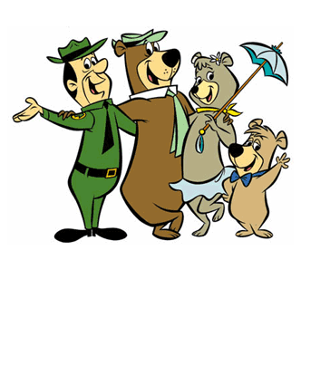

|
|  | |
Niagara Falls Tourist Attractions and Tourist InformationPlanning a Niagara Falls vacation? To make the most of your trip you'll want be as close to the Falls as you can, so head to Jellystone Park. Niagara Falls is located just minutes away and is easy to get to thanks to our regular shuttle service. The shuttle leaves from our campground several times daily and is a convenient way for you to access Niagara Falls tourist attractions. A great way to take advantage of the many nearby attractions is with a Niagara Falls tour package available through Jellystone Park. Or, if you prefer, choose the attractions which appeal the most to you and your family.
Whatever you choose, you won't be disappointed. Jellystone Park is the perfect place to make the most of your time when camping at Niagara Falls. |